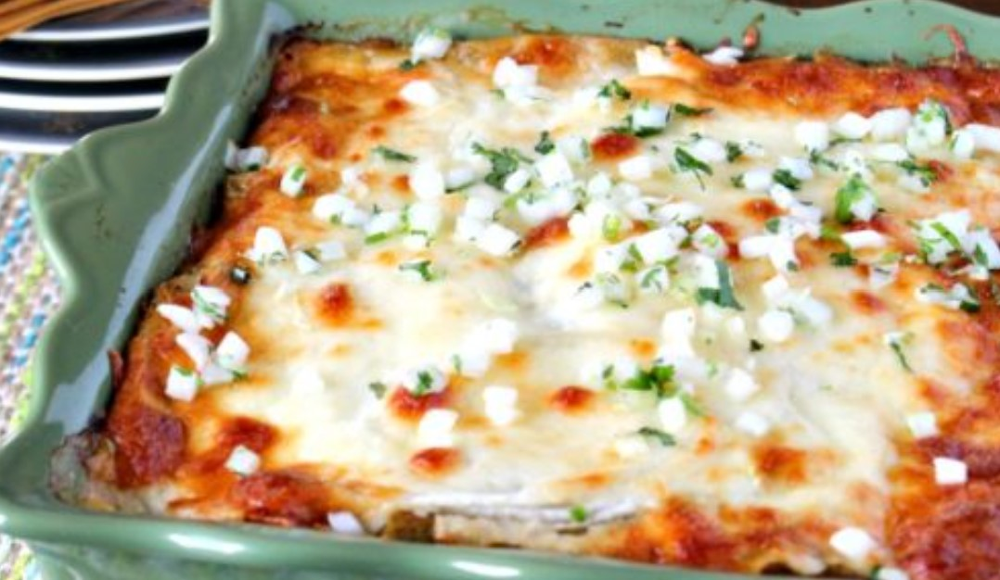

This recipe is by Latino Foodie, an online food blog specializing in Latino dishes. This dish is composed of yummy chiles de arbol,hatch chiles, jalapenos, garlic and other delectable spices. It's perfect to feed your family on a Sunday evening as you all gather around the table and talk about the past week's crazy adventures.